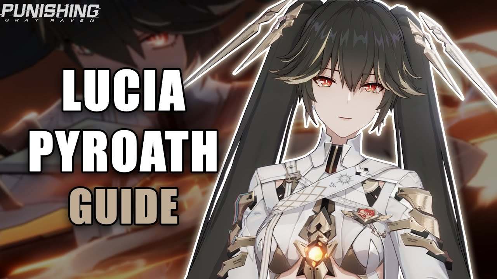
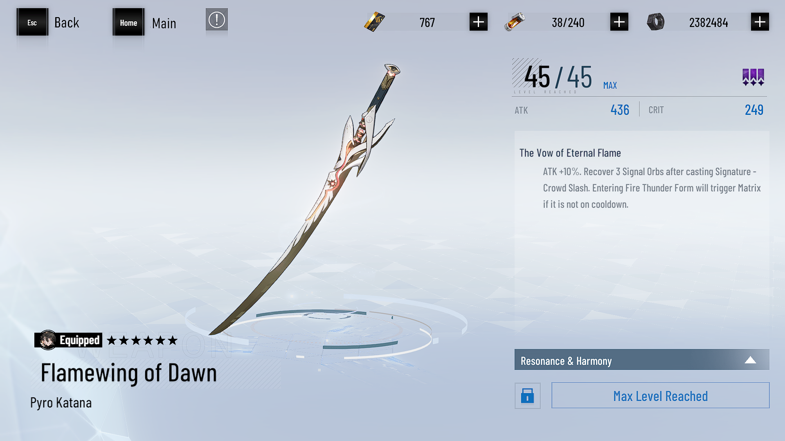
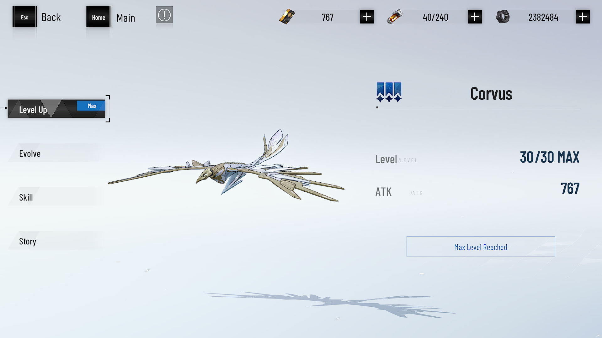
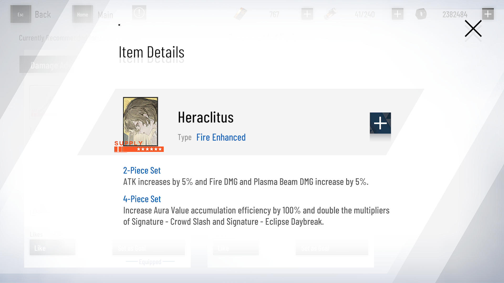
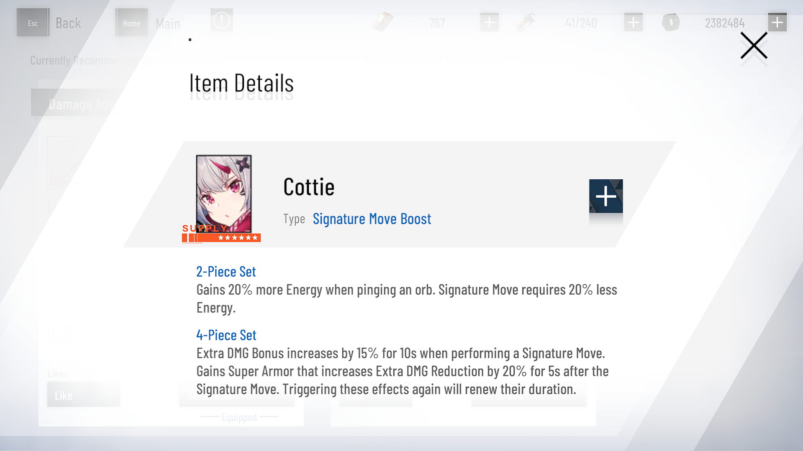
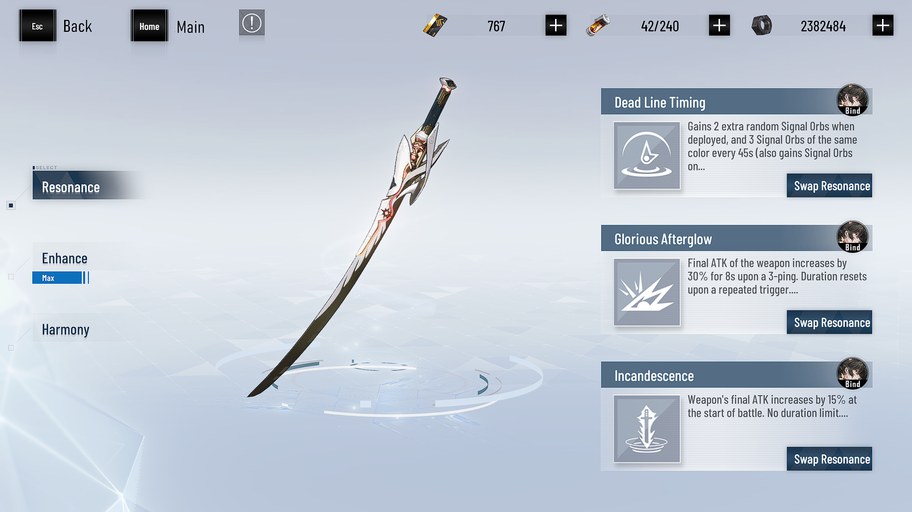

Lucia: Pyroath is an upcoming S-Rank Fire Attacker on the global server, and my guide is here to help you master this new construct.

Recommended Weapon and CUB
A list of recommended builds for Lucia: Pyroath can be found here.

ATK increases by 10%. After performing Signature Move – Auxiliary Precision Slash, recovers 3 Signal Orbs. Entering Blazing Thunder Form will trigger Matrix if it is not on cooldown.

Corvus will circle around the target, dive, and pull in nearby enemies, dealing damage.
Memory Builds ◇ Lucia: Pyroath
Disclaimer: Build switching is easier when placing 2-set Memories in top slots.
Builds below show placements for ease of switching sets. Placements that optimize stats may differ.
Weapon Harmony builds are now the meta. Builds that do not utilize Harmony remain viable if Players lack 6★ Weapons or materials.


Heraclitus x4 / Cottie x2
Memory Resonance
Note: Top and Bottom Resonance Slots can be assumed to be resonated to x6 of the below effects unless specified in orange.
Top Resonance Slot (1):
Any ATK: ATK +15
Bottom Resonance Slot (2):
Dazzling Flare: Signature Move Level +1
Key Notes
Main DPS Build
Without Weapon Harmony keep 2-set Cottie
Hypertune set
Usage
Phantom Pain Cage
War Zone
Norman Revival Plan
High difficulty content
Details
Used in most content since Lucia: Pyroath is the main DPS for the Fire team
Weapon Resonance ◇ Lucia: Pyroath
Recommended 6★ weapon resonances for Lucia: Pyroath can be found here listed in order of priority.

1. Dead Line Timing
Gains 2 extra random Signal Orbs when deployed, and 3 Signal Orbs of the same color every 45s (also gains Signal Orbs on standby).
2. Glorious Afterglow
Final ATK of the weapon increases by 30% for 8s upon a 3-ping. Duration resets upon a repeated trigger.
3. Matrix Lightning
Movement Speed greatly increases and all enemies' Extra DMG Reduction decreases by 10% in Matrix.
4. Incandescence
Weapon's final ATK increases by 15% at the start of battle. No duration limit.
Priority
High
Dead Line Timing
Glorious Afterglow
Medium
Matrix Lightning
Incandescence
Notes
Minimum recommended amount: 1
Dead Line Timing is not strictly required as the Signature Weapon provides Signal Orbs. However, the first damage cycle must be cut short due to the lack of two additional starting Orbs.